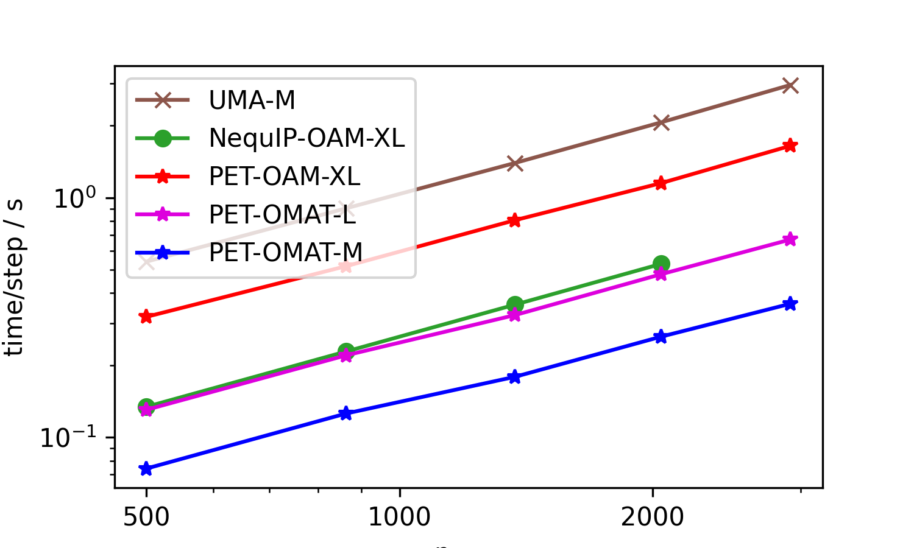
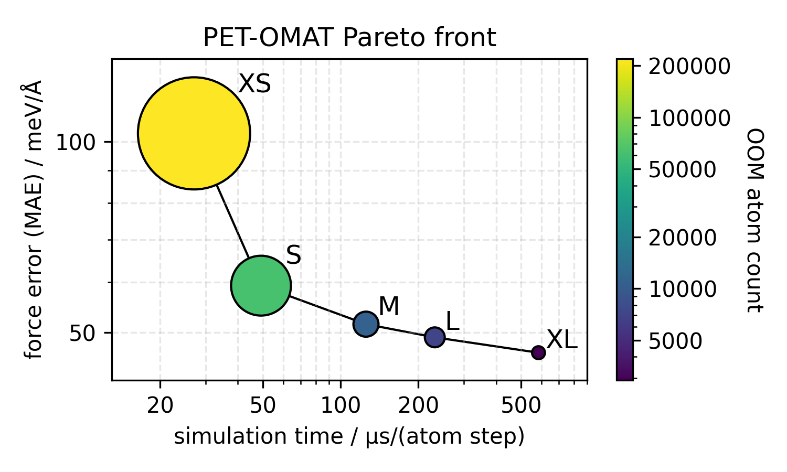
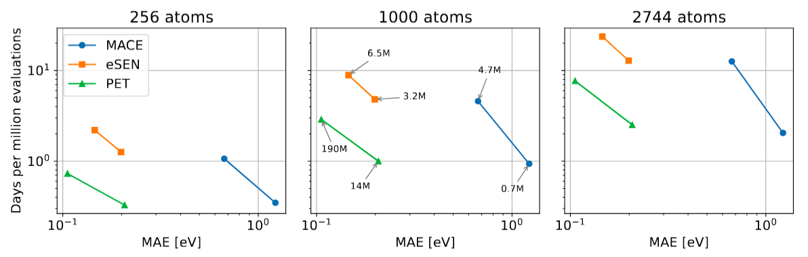

Available models¶
The following pre-trained UPET models are available:
Name |
Level of theory |
Available sizes |
To be used for |
Training set |
|---|---|---|---|---|
PET-MAD-1.5 |
r2SCAN |
XS, S |
materials & molecules (102 elements) |
OMat → MAD-1.5 |
PET-OAM |
PBE (Materials Project) |
L, XL |
materials (89 elements) |
OMat → sAlex+MPtrj |
PET-OMat |
PBE |
XS, S, M, L, XL |
materials (89 elements) |
OMat |
PET-OMATPES |
r2SCAN |
L |
materials (89 elements) |
OMat → MATPES |
PET-SPICE |
ωB97M-D3 |
S, L |
molecules (17 elements) |
SPICE |
Recommended usage:
PET-MAD v1.5.0 for molecular dynamics simulations of materials, surfaces, interfaces, solutions, metal complexes and other challenging systems.
PET-OAM for materials discovery tasks (convex hull energies, geometry optimization, phonons, etc.).
PET-SPICE for accurate and fast simulations of molecules and biomolecules.
Model sizes¶
The XS / S / M / L / XL suffixes correspond to a fixed family of architecture hyperparameters, introduced as the PET-OMat Pareto front in Bigi et al., 2026 (Table IV, Appendix A). The same naming convention is reused for the other UPET families (PET-MAD, PET-OMAD, PET-OMATPES, PET-SPICE), so that e.g. PET-MAD-S and PET-OMat-S share the same architectural budget.
Hyperparameter |
XS |
S |
M |
L |
XL |
|---|---|---|---|---|---|
Parameter count |
4.5 M |
25.9 M |
109 M |
255 M |
730 M |
Edge feature dimension |
128 |
256 |
384 |
512 |
640 |
GNN layers |
2 |
3 |
3 |
4 |
5 |
Transformer (attention) layers |
1 |
1 |
2 |
2 |
3 |
Graph cutoff radius (Å) |
7.5 |
8.0 |
8.5 |
9.0 |
10.0 |
Adaptive neighbor number |
8 |
16 |
24 |
32 |
40 |
Larger sizes are more accurate but also more expensive and have a lower maximum system size before running out of GPU memory — see Fig. A2 in the reference above for the accuracy / cost / memory Pareto plot. As a rule of thumb, S is a good default for molecular dynamics, while L / XL are preferred for materials discovery workflows where accuracy dominates cost.
Model speeds¶
Seeing the parameter counts of our larger models, it would be tempting to think that the models are slow. This is not the case, as we use our parameters in a very sparse manner. Here we present a few benchmarks.
First, we present a benchmark of the top three open-source models on Matbench Discovery (as of Jan 14, 2026), replacing eSEN by its successor UMA-M. These were run on an H100 GPU (96GB VRAM). The structures are aluminum cells of increasing sizes and report time per energy/conservative force evaluation (lower is better). The NequIP model ran out of memory during the evaluation of the large structure (hence the missing point on the right).
{kind=link}

Besides the large PET-OAM-XL model, the figure also shows timings for two OMat24-trained models that are smaller (and faster). To get a sense of the speed-accuracy tradeoff, as well as the memory requirements of the entire PET-OMAT family, we also show a Pareto plot comparing cost and OMat24 validation errors
{kind=link}

Finally, we present a benchmark we ran on carbon structures using models trained on the SPICE dataset. This benchmark was run on an A100 GPU (cf. this preprint for details on the models being compared).
{kind=link}

Uncertainty quantification¶
A subset of PET-MAD checkpoints expose per-structure energy uncertainty
estimates through get_energy_uncertainty()
and get_energy_ensemble()
(LLPR + shallow-ensemble heads, see Uncertainty quantification for usage):
pet-mad-sv1.0.2pet-mad-xsv1.5.0pet-mad-sv1.5.0
Calling these methods on other checkpoints will raise an error.
Non-conservative forces¶
All UPET checkpoints support conservative forces (the derivative of the
predicted energy). Most also expose a direct, non-conservative force head
that is 2–3× faster at inference; see Non-conservative (direct) forces and stresses. The
following checkpoints are conservative-only and therefore do not
support non_conservative=True:
pet-mad-sv1.0.2pet-spice-sv0.2.0pet-spice-lv0.2.0
PET-MAD-DOS¶
In addition to the energy/force models above, UPET ships PET-MAD-DOS,
a separate model family for predicting the electronic density of states,
Fermi levels and bandgaps via
PETMADDOSCalculator (see
DOS, Fermi levels and bandgaps (PET-MAD-DOS)).
Version |
Level of theory |
Supported outputs |
Notes |
|---|---|---|---|
1.0 |
PBE (Materials Project) |
DOS, Fermi level, bandgap |
Latest stable |
See How et al., 2025 for the methodology.
Legacy models¶
For reproducibility or to cover specific use cases, we also provide a few additional models. These are expected to have worse performance than the models above.
Name |
Level of theory |
Available sizes |
To be used for |
Training set |
|---|---|---|---|---|
PET-MAD-1 |
PBESol |
S |
materials & molecules (85 elements) |
MAD-1.0 |
PET-OMAD |
PBESol |
XS, S, L |
materials & molecules (85 elements) |
OMat → MAD-1.0 |
All checkpoints are available on the HuggingFace repository.